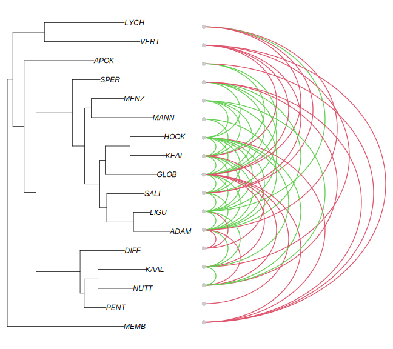
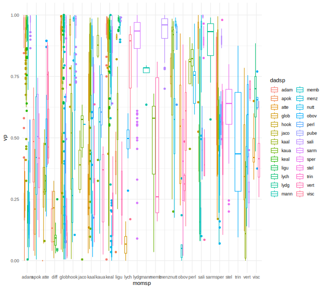
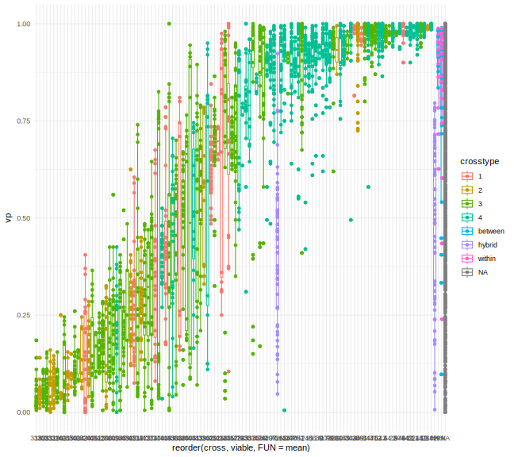
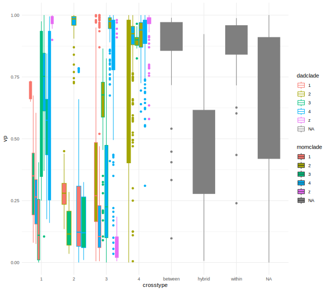
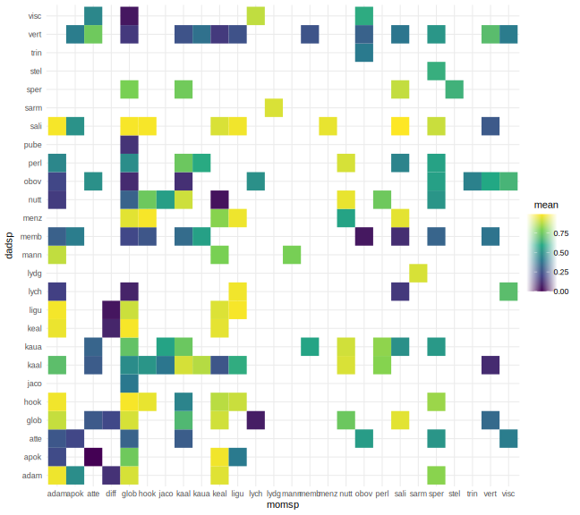
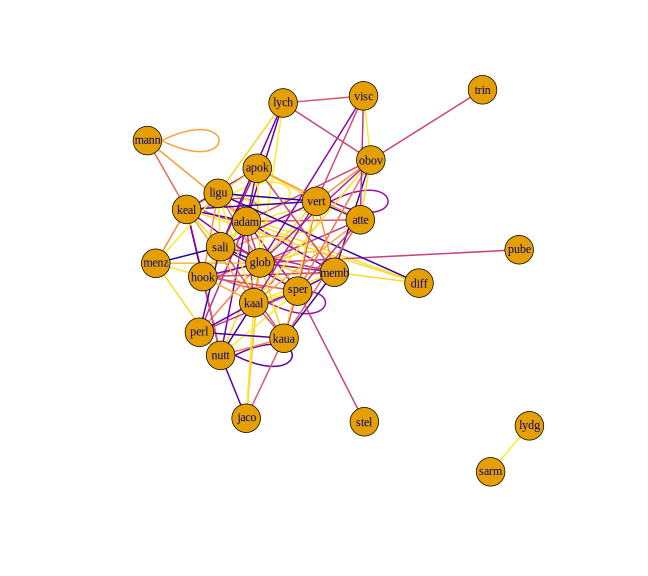
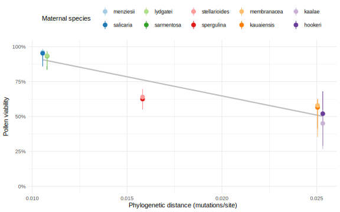
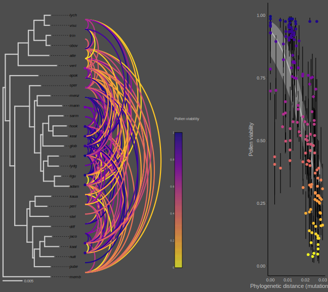
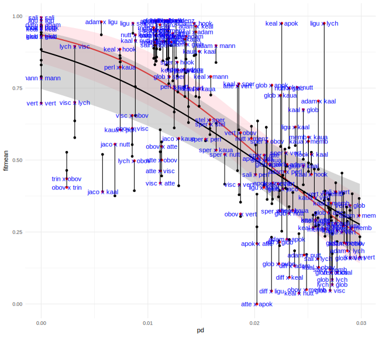

Does interfertility decrease with phylogenetic distance in Schiedea?
Binary pollen fertility data
Data from Weller et al. 2001. F1 hybrids that made greater or less than 50 percent fertile pollen.
fert <- read.table(file="data/fertility.csv", sep="\t", header=T)
fert$sp1 <- toupper(fert$sp1)
fert$sp2 <- toupper(fert$sp2)
fert$g50 <- fert$g50+1
fspecies <- data.frame(name=levels(factor(c(fert$sp1,fert$sp2))))
g <- graph_from_data_frame(fert, directed=F, vertices=fspecies)
g_edges = get.edgelist(g)Clustering
Phylogeny on the right, clustering by network of fertile pollen on left
#clustering by network
adj <- get.adjacency(g, attr="g50")
adj[adj==2] <- 0.5
g.d <- graph_from_adjacency_matrix(adj, weighted=T, mode="undirected")
ceb <- cluster_edge_betweenness(g.d)
#trim phlyo
sch.f <- sch
sch.f$tip.label <- toupper(paste("",substr(sch.f$tip.label,1,4),sep=""))
sch.f<-drop.tip(sch.f,sch.f$tip.label[-match(fspecies$name, sch$tip.label)])
#cophenetic plot
ceb_tree <- cophylo(as_phylo(ceb), sch.f)Rotating nodes to optimize matching...
Done.plot(ceb_tree)
Arcplot
F1 hybrids that made greater (green) or less than (red) 50 percent fertile pollen.
#phylo-arcplot
par(mfrow=c(1,2))
par(mar=c(1.2,0,1.2,0))
plot(sch.f)
par(mar=c(0,0,0,0))
arcplot(g_edges, show.labels=F, horizontal=F, ordering=sch.f$tip.label, col.arcs=fert$g50+1)
Fertility vs. phylogenetic distance
adj <- as.matrix(get.adjacency(g, attr="g50"))
adj[upper.tri(adj, diag=T)]<-NA
adj[adj==0] <- NA
phydist <- cophenetic.phylo(sch.f)
phydist[upper.tri(phydist, diag=T)]<-NA
pf <- na.omit(data.frame(pd=c(phydist), ft=c(adj-1)))
cor(pf$ft, pf$pd, use="complete.obs")[1] -0.3740546cor.test(pf$ft, pf$pd, use="complete.obs")
Pearson's product-moment correlation
data: pf$ft and pf$pd
t = -2.9085, df = 52, p-value = 0.005331
alternative hypothesis: true correlation is not equal to 0
95 percent confidence interval:
-0.5833851 -0.1181252
sample estimates:
cor
-0.3740546 Logistic regression
#Logistic regression
model <- glm(ft~pd, family=binomial(link='logit'), data=pf)
summary(model)
Call:
glm(formula = ft ~ pd, family = binomial(link = "logit"), data = pf)
Coefficients:
Estimate Std. Error z value Pr(>|z|)
(Intercept) 4.546 1.689 2.691 0.00712 **
pd -177.869 70.976 -2.506 0.01221 *
---
Signif. codes: 0 '***' 0.001 '**' 0.01 '*' 0.05 '.' 0.1 ' ' 1
(Dispersion parameter for binomial family taken to be 1)
Null deviance: 71.188 on 53 degrees of freedom
Residual deviance: 62.457 on 52 degrees of freedom
AIC: 66.457
Number of Fisher Scoring iterations: 4confint(model) 2.5 % 97.5 %
(Intercept) 1.660361 8.395113
pd -337.364722 -54.308760wald.test(b = coef(model), Sigma = vcov(model), Terms = 2)Wald test:
----------
Chi-squared test:
X2 = 6.3, df = 1, P(> X2) = 0.012Logistic regression plot
plot <- ggplot(pf, aes(pd, ft)) + stat_smooth(method="glm", method.args=list(family="binomial"), se=T, color="black") + scale_y_continuous(breaks=c(0, 1), labels=c("<50%", ">50%")) + scale_x_continuous() + xlab("Phylogenetic distance") + ylab("Hybrid pollen fertility") + scale_fill_gradientn(colors=c("white","black")) + theme_bw()
plot + geom_bin2d()
Continuous pollen fertility data
#data from the original "hpol" and "hpol2" datasets (Weller et al. 2001), Lisa McGrath
crosses <- read.table("data/hpol_crosses.tsv", sep="\t", header=T, colClasses = list(cross="factor",crosstype="factor"))
str(crosses)'data.frame': 120 obs. of 11 variables:
$ cross : Factor w/ 120 levels "108","11","116",..: 13 24 105 107 118 2 4 9 20 23 ...
$ mompop : int 847 847 847 847 847 847 847 847 847 847 ...
$ momid : chr "B" "B" "B" "B" ...
$ dadpop : int 794 794 794 794 794 842 842 842 847 791 ...
$ dadid : chr "3" "3" "3" "3" ...
$ momsp : chr "adam" "adam" "adam" "adam" ...
$ dadsp : chr "hook" "hook" "hook" "hook" ...
$ mombs : chr "d" "d" "d" "d" ...
$ dadbs : chr "h" "h" "h" "h" ...
$ crosstype: Factor w/ 4 levels "1","2","3","4": 3 3 3 3 3 4 4 4 4 4 ...
$ notes : chr "" "" "" "" ...pol <- read.table("data/hpol.tsv", sep="\t", header=T, colClasses = list(cross="factor", id="factor",crosstype="factor"))
pol$date <- NULL
pol$tot <- 200
pol$vp <- pol$viable/pol$tot
pol$mombs <- factor(ifelse(pol$crosstype %in% c("1","2"), "H", ifelse(pol$crosstype=="z", "z", "D")))
pol$dadbs <- factor(ifelse(pol$crosstype %in% c("1","3"), "H", ifelse(pol$crosstype=="z", "z", "D")))
pol$momgrp <- with(pol, factor(paste(momclade,momisle,mombs)))
pol$dadgrp <- with(pol, factor(paste(dadclade,dadisle,dadbs)))
pol$momsp <- crosses$momsp[match(pol$cross, crosses$cross)]
pol$dadsp <- crosses$dadsp[match(pol$cross, crosses$cross)]
#data from crosses 2019-2022
pol2 <- read.csv("data/Pollen fertility - fertility.csv") %>%
drop_na(momsp, dadsp, viable, inviable, tot)
pol2$vp <- pol2$viable/pol2$tot
pol2$momsp <- str_sub(pol2$momsp, 1, 4)
pol2$dadsp <- str_sub(pol2$dadsp, 1, 4)
#data from kaal/hook crosses 2015-2017
pol3 <- read.table("data/pollen.tsv", sep="\t", header=T) %>% rename(tot=total)
pol3$vp <- pol3$viable/pol3$tot
pol <- bind_rows(HPOL=pol, pol2019.2022=pol2, pol2015.2017.KH=pol3, .id="dataset")
str(pol)'data.frame': 3457 obs. of 63 variables:
$ dataset : chr "HPOL" "HPOL" "HPOL" "HPOL" ...
$ cross : chr "66" "66" "66" "66" ...
$ id : chr "31" "31" "31" "31" ...
$ viable : int 122 165 151 166 173 189 191 183 184 179 ...
$ crosstype : chr "4" "4" "4" "4" ...
$ momisle : chr "O" "O" "O" "O" ...
$ dadisle : chr "O" "O" "O" "O" ...
$ momclade : chr "2" "2" "2" "2" ...
$ dadclade : chr "4" "4" "4" "4" ...
$ tot : num 200 200 200 200 200 200 200 200 200 200 ...
$ vp : num 0.61 0.825 0.755 0.83 0.865 0.945 0.955 0.915 0.92 0.895 ...
$ mombs : Factor w/ 2 levels "D","H": 1 1 1 1 1 1 1 1 1 1 ...
$ dadbs : Factor w/ 2 levels "D","H": 1 1 1 1 1 1 1 1 1 1 ...
$ momgrp : Factor w/ 13 levels "1 K H","1 N H",..: 5 5 5 5 5 11 11 11 11 11 ...
$ dadgrp : Factor w/ 16 levels "1 K H","1 N H",..: 13 13 13 13 13 5 5 5 5 5 ...
$ momsp : chr "adam" "adam" "adam" "adam" ...
$ dadsp : chr "keal" "keal" "keal" "keal" ...
$ index : int NA NA NA NA NA NA NA NA NA NA ...
$ date : chr NA NA NA NA ...
$ boxcell : int NA NA NA NA NA NA NA NA NA NA ...
$ mompid : chr NA NA NA NA ...
$ dadpid : chr NA NA NA NA ...
$ fullcross : chr NA NA NA NA ...
$ progenyid : int NA NA NA NA NA NA NA NA NA NA ...
$ flowers : int NA NA NA NA NA NA NA NA NA NA ...
$ anthers : int NA NA NA NA NA NA NA NA NA NA ...
$ line : num NA NA NA NA NA NA NA NA NA NA ...
$ inviable : int NA NA NA NA NA NA NA NA NA NA ...
$ notes : chr NA NA NA NA ...
$ set : int NA NA NA NA NA NA NA NA NA NA ...
$ cell : int NA NA NA NA NA NA NA NA NA NA ...
$ mompop : chr NA NA NA NA ...
$ momid : chr NA NA NA NA ...
$ dadpop : chr NA NA NA NA ...
$ dadid : chr NA NA NA NA ...
$ V1 : int NA NA NA NA NA NA NA NA NA NA ...
$ I1 : int NA NA NA NA NA NA NA NA NA NA ...
$ V2 : int NA NA NA NA NA NA NA NA NA NA ...
$ I2 : int NA NA NA NA NA NA NA NA NA NA ...
$ V3 : int NA NA NA NA NA NA NA NA NA NA ...
$ I3 : int NA NA NA NA NA NA NA NA NA NA ...
$ V4 : int NA NA NA NA NA NA NA NA NA NA ...
$ I4 : int NA NA NA NA NA NA NA NA NA NA ...
$ V5 : int NA NA NA NA NA NA NA NA NA NA ...
$ I5 : int NA NA NA NA NA NA NA NA NA NA ...
$ V6 : int NA NA NA NA NA NA NA NA NA NA ...
$ I6 : int NA NA NA NA NA NA NA NA NA NA ...
$ V7 : int NA NA NA NA NA NA NA NA NA NA ...
$ I7 : int NA NA NA NA NA NA NA NA NA NA ...
$ V8 : int NA NA NA NA NA NA NA NA NA NA ...
$ I8 : int NA NA NA NA NA NA NA NA NA NA ...
$ V9 : int NA NA NA NA NA NA NA NA NA NA ...
$ I9 : int NA NA NA NA NA NA NA NA NA NA ...
$ V10 : int NA NA NA NA NA NA NA NA NA NA ...
$ I10 : int NA NA NA NA NA NA NA NA NA NA ...
$ comments : chr NA NA NA NA ...
$ viable.per.anther : num NA NA NA NA NA NA NA NA NA NA ...
$ inviable.per.anther: num NA NA NA NA NA NA NA NA NA NA ...
$ total.per.anther : num NA NA NA NA NA NA NA NA NA NA ...
$ prop.viable : num NA NA NA NA NA NA NA NA NA NA ...
$ sxc : chr NA NA NA NA ...
$ sxcxm : chr NA NA NA NA ...
$ smompop : chr NA NA NA NA ...heatmap(with(pol, table(momsp,dadsp)), col=inferno(512), scale="none", Colv=NA, Rowv=NA)#polmeans <- aggregate(vp~cross*momgrp*momclade*momisle*mombs*dadgrp*dadclade*dadisle*dadbs, data=pol, FUN=function(x) c(mean(x), sd(x), length(x)))
polmeans <- aggregate(vp~momsp*dadsp, data=pol, FUN=function(x) c(median(x), quantile(x,0.25), quantile(x,0.75), length(x))) #mean is median!!!
polmeans <- do.call(data.frame, polmeans)
colnames(polmeans)[3:6] <- c("mean", "q25", "q75", "N")
#write.csv(polmeans, "results/hpol_means.csv", row.names=F)
#alllvl <- sort(unique(c(levels(polmeans$momgrp), levels(polmeans$dadgrp))))
#grps <- cbind(alllvl, read.table(text=alllvl, sep=" ", col.names=c("clade","isle","bs")))
species <- unique(c(pol$momsp,pol$dadsp))
grps <- data.frame(sp=species)
poltbl <- dcast(polmeans, momsp ~ dadsp, value.var="mean", fun.aggregate = mean)
rownames(poltbl) <- poltbl$momsp
poltbl$momsp <- NULL
poltbl2 <- as.matrix(poltbl)
poltbl2[is.nan(poltbl2)] <- 0ggplot(pol, aes(x=momsp, color=dadsp, y=vp)) + geom_boxplot()
ggplot(pol, aes(x=momclade, color=dadclade, y=vp)) + geom_boxplot() + geom_point()
ggplot(pol, aes(x=momisle, color=dadisle, y=vp)) + geom_boxplot() + geom_point()
ggplot(pol, aes(x=momclade, color=dadclade, y=vp)) + geom_boxplot() + geom_point()
ggplot(pol, aes(x=reorder(cross, viable, FUN=mean), y=vp, color=crosstype)) + geom_boxplot() + geom_point()
ggplot(pol, aes(x=crosstype, y=vp, color=dadclade, fill=momclade)) + geom_boxplot()
#heatmap(poltbl2, col=viridis(512), scale="none", Rowv = NA, Colv=NA)
#ggplot(polmeans, aes(x=factor(momsp, levels=alllvl), y=factor(dadgrp, levels=alllvl), fill=mean)) + geom_tile() + scale_x_discrete(drop=F) + scale_y_discrete(drop=F) + scale_fill_viridis_c()
#ggplot(polmeans, aes(x=momclade, y=dadclade, fill=mean)) + geom_tile() + scale_fill_viridis_c()
ggplot(polmeans, aes(x=momsp, y=dadsp, fill=mean)) + geom_tile() + scale_fill_viridis_c()
ggplot(pol, aes(x=vp, fill=dataset)) + geom_density(alpha=0.5)
colfunc <- viridisLite::plasma
g <- graph_from_data_frame(polmeans[,c("momsp","dadsp","mean","q25","q75","N")], directed=T, vertices=grps)
lgw <- layout_in_circle(g)
#plot.igraph(g, layout=layout_in_circle(g, order=order(grps$clade)), edge.color=colfunc(100)[round(E(g)$mean*100)], vertex.color=rainbow(10)[grps$clade], vertex.label.color=rainbow(10)[as.integer(grps$isle)+6], vertex.label.cex=2)
plot.igraph(g, layout=layout_in_circle(g))gu <- as.undirected(g, mode="collapse", edge.attr.comb = "mean")
adj <- get.adjacency(gu, attr="mean")
g.w <- graph_from_adjacency_matrix(adj, weighted=T, mode="undirected")
#plot(g.w, layout_with_fr(g.w), edge.color=colfunc(100)[round(E(g)$mean*100)], edge.width=2, vertex.color=rainbow(10)[grps$clade], vertex.label.color=rainbow(10)[as.integer(grps$isle)+6], vertex.label.cex=2)
plot(g.w, layout=layout_with_fr(g.w), edge.color=colfunc(100)[round(E(g)$mean*100)], edge.width=2)
#dendPlot(cle, mode="phylo", use.edge.length = T, main="leading eigen")
plot(as.dendrogram(cluster_leading_eigen(gu)))
g_edges = get.edgelist(g)
arcplot(g_edges, show.labels=T, horizontal=F, col.arcs=colfunc(100)[round(polmeans$mean*100)], sorted=T)Clustering
ceb <- cluster_leading_eigen(gu)
#trim phlyo
sch.f <- sch
sch.f$tip.label <- tolower(paste("",substr(sch.f$tip.label,1,4),sep=""))
sch.f<-drop.tip(sch.f,sch.f$tip.label[-match(species, sch.f$tip.label)])
species1f <- species1
rownames(species1f) <- tolower(rownames(species1f))
species1f <- species1f[sch.f$tip.label,]
#BScols <- setNames(c("black", "navy", "lightblue", "white", "white", "white"),1:6)
BScols <- setNames(RColorBrewer::brewer.pal(6,"Set2")[c(6,4,2,5,1,3)],1:6)
#intraspecies <- setNames(polmeans$mean[match(paste(sch.f$tip.label,sch.f$tip.label), paste(polmeans$momsp,polmeans$dadsp))], sch.f$tip.label)
intraspecies <- setNames(polmeans$mean[match(paste(names(V(g)),names(V(g))), paste(polmeans$momsp,polmeans$dadsp))], names(V(g)))
#cophenetic plot
ceb_tree <- cophylo(as_phylo(ceb), sch.f)Rotating nodes to optimize matching...
Done.plot(ceb_tree)#phylo-arcplot
#png("plots/arcplot.png", height=1500, width=3000, pointsize=56)
par(mfrow=c(1,3) , bg="grey30")
par(mar=c(1.5,0,1.5,0))
plot(sch.f, align.tip.label=T, tip.color=BScols[as.integer(species1f$Breeding.System)], edge.width=8, edge.color="grey80", cex=1.5, lwd=8)
add.scale.bar(y=0.002, x=0.002, lcol="white",col="grey80")
par(mar=c(0,0,0,0))
arcplot(g_edges, show.labels=F, horizontal=F, ordering=sch.f$tip.label, col.arcs=plasma(512, direction=-1)[round(polmeans$mean*512)], sorted=T, show.nodes=T, lwd.arcs=6, col.nodes = plasma(512, direction=-1)[round(intraspecies*512)], pch.nodes = 19, cex.nodes=1)
plot.new()
#legend(x=-0.05,y=1, legend = rev(levels(species1f$Breeding.System)), col = rev(BScols), pch = 19, cex=1.2, pt.cex=2.5, bty="n", xpd=T, text.col= rev(BScols))
color.legend(0,0.55,1,0.65,legend=seq(0,1,0.2),rect.col=plasma(512, direction=-1),cex=1, col="grey80", align="rt")
text(0.2, 0.7, "Pollen viability", col="grey80", cex=1.5)
#dev.off()Fertility vs. phylogenetic distance
phydist <- cophenetic.phylo(sch.f)
#phydist[upper.tri(phydist, diag=T)]<-NA
adj <- as.matrix(as_adj(g, attr="mean"))
#diag(adj) <- NA
#adj[upper.tri(adj, diag=T)]<-NA
adj[adj==0] <- NA
adj <- adj[sch.f$tip.label,sch.f$tip.label]
adj.N <- as.matrix(as_adj(g, attr="N"))
adj.N <- adj.N[sch.f$tip.label,sch.f$tip.label]
adj.q25 <- as.matrix(as_adj(g, attr="q25"))
adj.q25 <- adj.q25[sch.f$tip.label,sch.f$tip.label]
adj.q75 <- as.matrix(as_adj(g, attr="q75"))
adj.q75 <- adj.q75[sch.f$tip.label,sch.f$tip.label]
comb <-function(x,y) {mapply(function(q,r) paste(sort(c(q,r)), collapse="-"), x, y)}
labels <- outer(sch.f$tip.label, sch.f$tip.label, comb)
pf <- na.omit(data.frame(pd=c(phydist), ft=c(adj), N=c(adj.N), q25=c(adj.q25), q75=c(adj.q75),crossname= c(outer(sch.f$tip.label, sch.f$tip.label, paste, sep=" x ")), crossname.sort=c(labels)))
#pf$q75[pf$q75==1]<- NA # safe for logit transform
pf$momsp <- substr(pf$crossname, 1,4)
pf$dadsp <- substr(pf$crossname, 8,11)
#plot(sch.f)
#nodelabels()
polyploid.event <- 31
polyploids <- extract.clade(sch.f, polyploid.event)$tip.label
pf$momploidy <- ifelse(pf$momsp %in% polyploids, "tetra", "di")
pf$dadploidy <- ifelse(pf$dadsp %in% polyploids, "tetra", "di")
pf$diffploidy <- pf$momploidy != pf$dadploidy
pf$momdadploidy <-paste(pf$momploidy, pf$dadploidy, sep=", ")
# cor(pf$ft, pf$pd, use="complete.obs")
# cor.test(pf$ft, pf$pd, use="complete.obs")
(pdft <- ggplot(pf, aes(x=pd, y=ft, color=momdadploidy)) +
geom_line(aes(group=crossname.sort), linewidth=2, alpha=0.5) +
geom_point() + geom_linerange(aes(ymin=q25, ymax=q75)) +
geom_smooth(se=F, span=0.8, linewidth=2) + theme(legend.position = "top")+
labs(x="Phylogenetic distance (mutations/site)", y="Pollen viability", color="Maternal, paternal ploidy"))
pdft + geom_text(aes(label=crossname))
plot(paintSubTree(sch.f,polyploid.event,"tetraploid","diploid"))no colors provided. using the following legend:
diploid tetraploid
"black" "#DF536B" legend("bottomright", legend=c("diploid","tetraploid"), fill=c(1,2))
nodelabels(node=polyploid.event, col=2, pch=19, cex=2)
sppairs <- c("menz x sali", "sali x menz", "lydg x sarm", "sarm x lydg",
"stel x sper", "sper x stel", "memb x kaua", "kaua x memb",
"kaal x hook", "hook x kaal")
sp <- c("menziesii","salicaria",
"lydgatei", "sarmentosa",
"stellarioides","spergulina",
"membranacea","kauaiensis",
"kaalae", "hookeri")
sp <- set_names(sp, substr(sp, 1,4))
pf %>% #filter(momsp %in% names(sp), dadsp %in% names(sp)) %>%
filter(crossname %in% sppairs | (momsp %in% names(sp) & momsp==dadsp)) %>%
ggplot(aes(x=pd, y=ft, color=factor(sp[momsp], levels=sp))) +
geom_linerange(aes(ymin=q25, ymax=q75)) + geom_point(size=3)+
scale_color_brewer(palette = "Paired") +
scale_y_continuous(labels=scales::percent_format(), limits=c(0,1))+
labs(x="Phylogenetic distance (mutations/site)", y="Pollen viability", color="Maternal species")+
theme(legend.position = "top") 
Arcplot
#phylo-arcplot
#TODO: arrange arcs front-to-back by phydist?
library(gridBase)
library(grid)
#png("plots/arcplot.png", height=1500, width=4000, pointsize=20, res=300)
par(mfrow=c(1,4) , bg="grey30")
par(mar=c(1,0,1,0))
plot(sch.f, align.tip.label=T, tip.color=BScols[as.integer(species1f$Breeding.System)], edge.width=3, edge.color="grey80", cex=1, lwd=4, label.offset=0.0001)
add.scale.bar(y=0.6, x=0, lcol="grey80",col="grey80", cex=1, lwd=3)
par(mar=c(0,0,0,0))
arcplot(g_edges, show.labels=F, horizontal=F, ordering=sch.f$tip.label, col.arcs=plasma(512, direction=-1)[round(polmeans$mean*512)], sorted=T, show.nodes=T, lwd.arcs=3, col.nodes = plasma(512, direction=-1)[round(intraspecies[order(names(intraspecies))]*512)], pch.nodes = 19, cex.nodes=1)
plot.new()
#legend(x=-0.05,y=1, legend = rev(levels(species1f$Breeding.System)), col = rev(BScols), pch = NA, cex=1, pt.cex=2.5, bty="n", xpd=T, text.col= rev(BScols))
library(plotrix)
color.legend(0.1,0.05,0.2,0.55,legend=seq(0,1,0.2),rect.col=plasma(511, direction=-1),cex=0.45, col="grey80", align="rt", gradient="y")
text(0.26, 0.6, "Pollen viability", col="grey80", cex=1)
plot.new()
vps <- baseViewports()
pushViewport(vps$figure)
vp1 <-plotViewport(c(0,0,0,0))
print(pdft +
geom_smooth(method="glm", method.args=list(family="binomial"), color="grey70", fill="grey80") +
geom_linerange(aes(ymin=q25, ymax=q75)) +
geom_point(aes(color=ft), size=2) +
coord_trans(y="logit") +
scale_y_continuous(breaks=c(0.01,seq(0,1,by=0.1), 0.99)) +
scale_color_viridis_c(option="plasma", direction=-1) +
theme_classic() +
theme(plot.background = element_rect(color = "grey30", fill = "grey30"), panel.background = element_rect(fill = "grey30", color = NA), legend.background = element_rect(color = NA, fill = "grey30"), axis.text = element_text(color = "grey80"), axis.title = element_text(color = "grey80")) +
guides(color=F), vp = vp1)
#dev.off()Binomial regression on raw data
## Binomial regression on means
model <- glm(ft~pd, family="quasibinomial", weights=N*200, data=pf)
summary(model)
plot(model)
library(glmmTMB)
betabin.tmb <- glmmTMB(round(cbind(ft*N*200,(1-ft)*N*200))~pd, data=pf, family="betabinomial")
summary(betabin.tmb)phydist.m <- melt(phydist)
polmeans$pd <- phydist.m$value[match(paste(polmeans$momsp,polmeans$dadsp), paste(phydist.m$Var1,phydist.m$Var2))]
pol$pd <- phydist.m$value[match(paste(pol$momsp,pol$dadsp), paste(phydist.m$Var1,phydist.m$Var2))]
pol$tot <- replace_na(pol$tot, 200) #pol dataset lacks totals
pol$inviable <- pol$tot-pol$viable
ggplot(pol, aes(y=vp,x=pd)) + geom_point() + geom_smooth()# model <- glm(cbind(viable, inviable)~pd, family="quasibinomial", data=pol)
# summary(model)
# #plot(model)
# library(jtools)
# effect_plot(model, pred = pd, interval = TRUE, data=pol) + geom_point(data=pol, aes(pd,vp), color="blue")
# coef(model)
library(glmmTMB)
# plot.glmmTMB <- function(x, ...) { qplot(x$fitted, x$residuals, xlab="Fitted values", ylab="Residuals", ...) + geom_smooth()}
#
# betabin.tmb <- glmmTMB(cbind(viable,inviable)~pd, data=pol, family="betabinomial")
# summary(betabin.tmb)
#plot(betabin.tmb)
# plot(fitted(betabin.tmb)~pol$pd)
# points(polmeans$mean~polmeans$pd, col="red")
#coef(betabin.tmb)
betabin.tmb.momdadsp <- glmmTMB(cbind(viable,inviable)~pd + (1|momsp) + (1|dadsp), data=pol, family="betabinomial")
#load("betabin.tmb.momdadsp.Rdata")
summary(betabin.tmb.momdadsp) Family: betabinomial ( logit )
Formula: cbind(viable, inviable) ~ pd + (1 | momsp) + (1 | dadsp)
Data: pol
AIC BIC logLik deviance df.resid
32299.0 32329.8 -16144.5 32289.0 3452
Random effects:
Conditional model:
Groups Name Variance Std.Dev.
momsp (Intercept) 0.5235 0.7236
dadsp (Intercept) 0.3277 0.5724
Number of obs: 3457, groups: momsp, 26; dadsp, 26
Dispersion parameter for betabinomial family (): 4.09
Conditional model:
Estimate Std. Error z value Pr(>|z|)
(Intercept) 1.9220 0.1915 10.04 <2e-16 ***
pd -105.5477 3.2649 -32.33 <2e-16 ***
---
Signif. codes: 0 '***' 0.001 '**' 0.01 '*' 0.05 '.' 0.1 ' ' 1#plot(betabin.tmb.momdadsp)
#save(betabin.tmb.momdadsp, file="betabin.tmb.momdadsp.Rdata")
######Plots############
#Looks like the random effects are overfitting :( GLM does the best
#pol$fitted <- fitted(betabin.tmb)
pol$fitted <- fitted(betabin.tmb.momdadsp)
#pol$fitted <- fitted(model)
polmeans$fitmean <- aggregate(fitted~momsp*dadsp, data=pol, FUN=mean)$fitted
ggplot(polmeans, aes(pd, fitmean)) +
geom_smooth(aes(y=mean), method="glm", method.args=list(family="binomial"), color="red", fill="pink") +
geom_smooth(method="glm", method.args=list(family="binomial"), color="black") +
geom_point() + geom_point(aes(y=mean), color="red") +
geom_segment(aes(xend=pd, yend=mean)) + geom_text(aes(y=mean, label=paste(momsp,dadsp,sep=" x ")), color="blue")
####Random effects#####
momsp.ef <- data.frame(sp=rownames(ranef(betabin.tmb.momdadsp)$cond$momsp), ef=ranef(betabin.tmb.momdadsp)$cond$momsp[[1]])#, sd=ranef(betabin.tmb.momdadsp, sd=T)$cond$momsp[[1]])
momsp.ef$sp <- reorder(momsp.ef$sp, momsp.ef$ef)
ggplot(momsp.ef, aes(sp,ef)) + geom_point() +# geom_linerange(aes(ymin=ef-sd, ymax=ef+sd)) +
ggtitle("Maternal random effects") + xlab("Species") + ylab("Effect")
dadsp.ef <- data.frame(sp=rownames(ranef(betabin.tmb.momdadsp)$cond$dadsp), ef=ranef(betabin.tmb.momdadsp)$cond$dadsp[[1]])#, sd=ranef(betabin.tmb.momdadsp, sd=T)$cond$dadsp[[1]])
dadsp.ef$sp <- reorder(dadsp.ef$sp, dadsp.ef$ef)
ggplot(dadsp.ef, aes(sp,ef)) + geom_point() +# geom_linerange(aes(ymin=ef-sd, ymax=ef+sd)) +
ggtitle("Paternal random effects") + xlab("Species") + ylab("Effect")